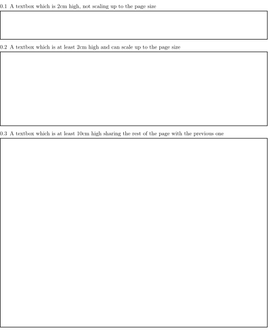

sdapsclassic class¶
This is the main class which currently should be used to create questionnaires. It builds on top of the other packages and adds new macros and environments which are similar to the ones from the original SDAPS LaTeX class.
Please note that the environments from the sdapslayout package cannot be used directly as using these environments will cause conflicting macro definitions. Instead one can simply use the aliases provided in this class.
The entire document should be wrapped using the questionnaire environment.
The following macros and environments exist:
questionnaire: Main environment wrapping everything
info: Style definition for information block
\addinfo: Add metadata to the project
\sdapsinfo: Print the standard instructions for filling out
The following question types exists for your use:
\singlemark: A single range or mark question\singlemarkother: A single range or makr question with an alternative answer in case it isn’t applicable\textbox: A large and optionally scalable textbox for freeform contentchoicequestion: A multiple choice question with a number of answerschoicegroup: A list of multiple choice questions layed out in rows (or columns)optionquestion: A single choice question with a number of answersoptiongroup: A list of single choice questions layed out in rows (or columns)markgroup: A list of range or mark questions layed out in rows (or columns)
You should only use \section{} for structuring the document.
Class Options¶
Argument |
Description |
|---|---|
sdaps_style |
The markings style to use. Either “code128”, “qr” (default: code128) |
checkmode |
|
disable_recognition |
Disable all recognition related page markings. This must not be used when intending to ues the SDAPS program for optical mark recognition. An example use case would be creating a PDF form using the SDAPS LaTeX classes. (default: not set) |
twoside_barcode |
|
globalid |
A global identifier to be printed on the document (as barcode) |
globalidlabel |
The label for the barcode (only code128) |
no_print_questionnaire_id |
Disable printing of questionnaire IDs |
print_questionnaire_id |
Enable printing of questionnaire IDs |
General macros and environments¶
-
\begin{
questionnaire} [kwargs]
content
\end{questionnaire}¶ - Keyword Arguments
noinfo – Suppress the generation of the standard information text
This is the main environment. You should have exactly one of these environments containing the entire document.
-
\begin{
info}
content
\end{info}¶ A simple environment which places a line on top and below the content.
-
\addinfo{key} {value}¶ Attach further metadata to the SDAPS project. This may be used for any purpose and the information will also appear on the cover page when generating a report using the main SDAPS program.
-
\sdapsinfo¶ Print the instruction text that is printed at the top of the page unless the noinfo keyword argument is given to
questionnaire.Place into a
infoblock to get the same visual appearance as the default information text.
-
\sdapspagemark¶ This macro must be executed once for every page. By default it is placed into the center footer and as such should not be executed unless the footer is modified.
While this command is provided, use it at your own risk. No guarantees are made on how the class uses this macro internally. If you use it, you need to verify the behaviour whenever the class is updated and ensure that everything is functioning appropriately. In particular, this macro must not be executed twice per page.
Question related macros¶
-
\checkbox*¶ - Arguments
* – If given, a single choice checkbox is shown instead of a multi choice.
Shows an unchecked checkbox for demonstration purposes.
-
\checkedbox*¶ - Arguments
* – If given, a single choice checkbox is shown instead of a multi choice.
Shows a checked checkbox for demonstration purposes.
-
\filledbox*¶ - Arguments
* – If given, a single choice checkbox is shown instead of a multi choice.
Shows a filled checkbox for demonstration purposes.
-
\correctedbox*¶ - Arguments
* – If given, a single choice checkbox is shown instead of a multi choice.
Shows a filled and checked checkbox for demonstration purposes.
-
\singlemark[kwargs] {question} {lower} {upper}¶ A simple “mark” question, i.e. a range. The command does not currently allow adding an alternate answer in a way similar to the markgroup or rangearray environments.
- Arguments
question – The question text
lower – The text for the lower label
upper – The text for the upper label
- Keyword Arguments
var – The variable for the question (to be appended to context).
count – The number of checkboxes (default:
markcheckboxcount).
\singlemark{A range question}{lower}{upper} \singlemark[count=6]{A range question with 6 answers}{lower}{upper} \setcounter{markcheckboxcount}{7} \singlemark{A range question with 7 answers}{lower}{upper}
Simplest form of a range question
-
\singlemarkother[kwargs] {question} {lower} {upper} {other}¶ Similar to
\singlemarkbut also takes an alternative answer.- Arguments
question – The question text
lower – The text for the lower label
upper – The text for the upper label
other – The text for the other label
- Keyword Arguments
var – The variable for the question (to be appended to context).
count – The number of checkboxes (default:
markcheckboxcount).
\singlemarkother{A range question}{lower}{upper}{other} \singlemarkother[count=6]{A range question with 6 answers}{lower}{upper}{other} \setcounter{markcheckboxcount}{7} \singlemarkother{A range question with 7 answers}{lower}{upper}{other}
A range question with an alternative answer
-
\textbox* [kwargs] {height} {question}¶ - Arguments
* – If given, the textbox is scalable in height
height – The height of the text including a unit. If the * parameter is given, then this is the minimal height only
question – The question text, may not contain fragile content
- Keyword Arguments
text – The question text for the metadata. Fragile content is currently not supported.
var – The variable name for this textbox (to be appended to context)
Todo
\textboxshould be able to handle an optional keyword argument and then allow the question text to include fragile content.\textbox*{2cm}{A textbox which is 2cm high, not scaling up to the page size} \textbox{2cm}{A textbox which is at least 2cm high and can scale up to the page size} \textbox{10cm}{A textbox which is at least 10cm high sharing the rest of the page with the previous one}

A textbox
Note that the SDAPS class supports rather fancy textbox handling including textboxes around other content!
Warning
The following examples are missing code for proper use! They mostly exist to show off the features but are not quite ready for easy consumption.
% Prepare some stuff so that we can access the specialized commands more easily. \ExplSyntaxOn \let\sdapshbox\sdaps_textbox_hbox:nnn \let\sdapshstretch\sdaps_textbox_hstretch:nnnnn \let\sdapsvbox\sdaps_textbox_vbox:nnnn \ExplSyntaxOff \sdapshbox {} {3bp} { This hbox } should have the same baseline. And one can see that a hbox on the left edge is \sdapshbox{}{3bp}{ nicely aligned } with the edge. And some in a formula: $ f(x) = \frac{1}{c\,\sdapshbox{}{3bp}{box}} \sdapshstretch{}{2mm}{5mm}{40mm}{1} $ See how even the horizontally stretching box in math mode works fine and fills up to the whole width! Some complex inline content: \sdapsvbox {} {0.6\linewidth} {3bp} { \begin{tabularx}{\linewidth}{l|l|X} adsf lkasjd lksj flkjsfd & blub & gah \\ \hline asdf & & \\ \end{tabularx} This is a paragraph with more text. This is a paragraph with more text. This is a paragraph with more text. This is a paragraph with more text. This is a paragraph with more text. This is a paragraph with more text. }
Fancy textboxes, for real use additional metadata writing is required!
![% Prepare some stuff so that we can access the specialized commands more easily.
\ExplSyntaxOn
\let\sdapshbox\sdaps_textbox_hbox:nnn
\let\sdapshstretch\sdaps_textbox_hstretch:nnnnn
\let\sdapsvbox\sdaps_textbox_vbox:nnnn
\ExplSyntaxOff
\sdapshbox {} {3bp} { This hbox } should have the same baseline. And one can see that a hbox on the left edge
is \sdapshbox{}{3bp}{ nicely aligned } with the edge. And some in a formula: $ f(x) = \frac{1}{c\,\sdapshbox{}{3bp}{box}} \sdapshstretch{}{2mm}{5mm}{40mm}{1} $
See how even the horizontally stretching box in math mode works fine and fills up to the whole width!
Some complex inline content:
\sdapsvbox {} {0.6\linewidth} {3bp} {
\begin{tabularx}{\linewidth}{l|l|X}
adsf lkasjd lksj flkjsfd & blub & gah \\
\hline
asdf & & \\
\end{tabularx}
This is a paragraph with more text. This is a paragraph with more text. This is a paragraph with more text.
This is a paragraph with more text. This is a paragraph with more text. This is a paragraph with more text.
}](_images/sdaps-7b5f67fcc26f98d4c44cf020d79590112811dccc.svg)
-
\addinfo{key} {value} Adds a bit of metadata. This metadata will for example appear on the cover page of the report.
- Arguments
key – The key to set
value – The value to set the key to
\addinfo{Key 1}{Value 1} \addinfo{Key 2}{Value 2} \addinfo{Key 3}{Value 3} \addinfo{Key 4}{Value 4} Almost empty document, look at the metadata to see what this is about.
An example showing the generated metadata
Question Environments¶
-
\begin{
choicequestion} [kwargs] {text}
content
\end{choicequestion}¶ - Arguments
text – Text of the choice question. Fragile content is currently not supported.
- Keyword Arguments
cols – Number of columns
colsep – Spacing added on the left/right of every cell. This defaults to 6pt.
rowsep – Extra distance between rows. This defaults to 0pt.
var – Variable name for this question (to be appended to context).
text – Replacement text for metadata
type – the question type “multichoice” or “singlechoice”
multichoice – switch to multichoice “Choice” question mode
singlechoice – switch to singlechoice “Option” question mode
The content should only contain
\choiceitem,\choicemulticolitemand\choiceitemtext.\begin{choicequestion}[cols=3]{This is a choice question} \choiceitem{First choice} \choicemulticolitem{2}{Second choice with a lot of text} \choiceitemtext{1.2cm}{3}{Other:} \end{choicequestion}
A choicequestion
-
\choiceitem[kwargs] {text}¶ A possible choice in a
choicequestion. Will span exactly one column.- Arguments
text – The text for the choice. Fragile content is currently not supported.
- Keyword Arguments
var – Variable name for this answer for multichoice (to be appended to context).
val – Value for this answer for singlechoice.
text – Replacement text for metadata.
-
\choicemulticolitem[kwargs] {cols} {text}¶ A possible choice in a
choicequestion. Will span exactly cols columns.- Arguments
cols – The number of columns to span.
text – The text for the choice. Fragile content is currently not supported.
- Keyword Arguments
var – Variable name for this answer for multichoice (to be appended to context).
val – Value for this answer for singlechoice.
text – Replacement text for metadata.
-
\choiceitemtext[kwargs] {height} {cols} {text}¶ A possible freeform choice in a
choicequestion. The text field will be of height height and it will span exactly cols columns.The text item can currently only be used in multichoice environments.
- Arguments
cols – The number of columns to span.
text – The text for the choice. Fragile content is currently not supported.
- Keyword Arguments
var – Variable name for this question (to be appended to context).
text – Replacement text for metadata.
-
\begin{
optionquestion} [kwargs] {text}
content
\end{optionquestion}¶ Alias for
choicequestionwhich simply sets it intosinglechoicemode by default.\begin{optionquestion}[cols=3,singlechoice]{This is a single choice question} \choiceitem{First choice} \choicemulticolitem{2}{Second choice with a lot of text} \end{optionquestion}
A choicequestion
-
\begin{
info}
content
\end{info} A simple block to typeset important information differently.
\begin{info} Just a block to write some information in, will have a line above and below. \end{info}
An info block
-
\begin{
markgroup} [kwargs] {text}
content
\end{markgroup}¶ - Arguments
text – Common question for all subquestions. Fragile content is currently not supported
kwags – Same as
rangearray
\begin{markgroup}[align=mygroupalignment]{A set of mark questions} \markline{First question}{lower}{upper} \markline{Second question}{lower 2}{upper 2} \end{markgroup} \begin{markgroup}[align=mygroupalignment]{Another set of mark questions which is aligned to the first} \markline{First question}{a}{c} \markline{Second question}{b}{d} \end{markgroup} \begin{markgroup}[other]{Another further set of questions with an alternative answer} \markline{First question}{lower}{upper}{other} \markline{Second question}{a}{b}{c} \end{markgroup}
![\begin{markgroup}[align=mygroupalignment]{A set of mark questions}
\markline{First question}{lower}{upper}
\markline{Second question}{lower 2}{upper 2}
\end{markgroup}
\begin{markgroup}[align=mygroupalignment]{Another set of mark questions which is aligned to the first}
\markline{First question}{a}{c}
\markline{Second question}{b}{d}
\end{markgroup}
\begin{markgroup}[other]{Another further set of questions with an alternative answer}
\markline{First question}{lower}{upper}{other}
\markline{Second question}{a}{b}{c}
\end{markgroup}](_images/sdaps-45058fe18d19b32583523bb2185816768f37ddb9.svg)
A group of range questions (used to be called mark)
Todo
The spacing in the “other” case is not sane, we need a larger default spacing in general.
-
\begin{
choicegroup} [kwargs] {text}
content
\end{choicegroup}¶ - Arguments
text – Common question for all subquestions. Fragile content is currently not supported
kwags – Same as
choicearray
Note
The choicegroup environment is an alias for the
choicearrayenvironment. At this point the only difference is that the choicegroup environment correctly prints the header and that it creates the\groupaddchoiceand\choicelinealiases.-
\choice[kwargs] {text}¶ A possible choice inside inside the group.
- Arguments
text – The choices (header) text.
- Keyword Arguments
text – A replacement text for the metadata, if set fragile content is permitted inside the text argument.
var – Variable name for this answer for multichoice (to be appended to context).
val – Value for this answer for singlechoice.
-
\question[kwargs] {text}¶ A single question inside the group. All choices need to be defined earlier using
\choice.- Arguments
text – Question text.
- Keyword Arguments
text – A replacement text for the metadata, if set fragile content is permitted inside the text argument.
var – Variable name for this question (to be appended to context).
range – Specify which chekcboxes to show. Needs ot be given an in order list of variables (multichoice) or values (singlechoice) also allowing specifying … for any amount of items.
\begin{choicegroup}{A group of questions} \choice{Choice 1} \choice{Choice 2} \question{Question one} \question{Question two} \end{choicegroup} \begin{choicegroup}[align=something]{Another question} \choice{Some choice 1} \choice{Some choice 2} \question{Question one} \question{Question two} \end{choicegroup} \begin{choicegroup}[align=something]{Another group of questions which is automatically aligned to the previous} \groupaddchoice{1} \groupaddchoice{2} \choiceline{Question one} \choiceline{Question two} \end{choicegroup}
![\begin{choicegroup}{A group of questions}
\choice{Choice 1}
\choice{Choice 2}
\question{Question one}
\question{Question two}
\end{choicegroup}
\begin{choicegroup}[align=something]{Another question}
\choice{Some choice 1}
\choice{Some choice 2}
\question{Question one}
\question{Question two}
\end{choicegroup}
\begin{choicegroup}[align=something]{Another group of questions which is automatically aligned to the previous}
\groupaddchoice{1}
\groupaddchoice{2}
\choiceline{Question one}
\choiceline{Question two}
\end{choicegroup}](_images/sdaps-c561b59ed06e4787b2c57421bf3566668f4f99ce.svg)
Example of a choicegroup environment
\begin{choicegroup}[layouter=rotated,vertical]{A group of questions} \groupaddchoice{Choice 1} \groupaddchoice{Choice 2} \choiceline{Question one} \choiceline{Question two} \end{choicegroup} \begin{choicegroup}[layouter=rotated,angle=45,vertical]{A group of questions with a smaller angle} \groupaddchoice{Choice 1} \groupaddchoice{Choice 2} \choiceline{Question one} \choiceline{Question two} \end{choicegroup}
Example of a vertical choicegroup environment also showing the "rotated" header layouter
\begin{choicegroup}[colsep=2pt,singlechoice]{Please select a date} \groupaddchoice{1} \groupaddchoice{2} \groupaddchoice{3} \groupaddchoice{4} \groupaddchoice{5} \groupaddchoice{6} \groupaddchoice{7} \groupaddchoice{8} \groupaddchoice{9} \groupaddchoice{10} \groupaddchoice{11} \groupaddchoice{12} \groupaddchoice{13} \groupaddchoice{14} \groupaddchoice{15} \groupaddchoice{16} \groupaddchoice{17} \groupaddchoice{18} \groupaddchoice{19} \groupaddchoice{20} \groupaddchoice{21} \groupaddchoice{22} \groupaddchoice{23} \groupaddchoice{24} \groupaddchoice{25} \groupaddchoice{26} \groupaddchoice{27} \groupaddchoice{28} \groupaddchoice{29} \groupaddchoice{30} \groupaddchoice{31} % Note that the automatically assigned values match the choices. \question{Day} \question[range={...,12}]{Month} \question[range={2,5,...,9,28,...}]{Range} \end{choicegroup}
![\begin{choicegroup}[colsep=2pt,singlechoice]{Please select a date}
\groupaddchoice{1}
\groupaddchoice{2}
\groupaddchoice{3}
\groupaddchoice{4}
\groupaddchoice{5}
\groupaddchoice{6}
\groupaddchoice{7}
\groupaddchoice{8}
\groupaddchoice{9}
\groupaddchoice{10}
\groupaddchoice{11}
\groupaddchoice{12}
\groupaddchoice{13}
\groupaddchoice{14}
\groupaddchoice{15}
\groupaddchoice{16}
\groupaddchoice{17}
\groupaddchoice{18}
\groupaddchoice{19}
\groupaddchoice{20}
\groupaddchoice{21}
\groupaddchoice{22}
\groupaddchoice{23}
\groupaddchoice{24}
\groupaddchoice{25}
\groupaddchoice{26}
\groupaddchoice{27}
\groupaddchoice{28}
\groupaddchoice{29}
\groupaddchoice{30}
\groupaddchoice{31}
% Note that the automatically assigned values match the choices.
\question{Day}
\question[range={...,12}]{Month}
\question[range={2,5,...,9,28,...}]{Range}
\end{choicegroup}](_images/sdaps-7f0603689480961b8d497b11f52a0f5c96f37a09.svg)
Example of choice filtering
-
\begin{
optiongroup} [kwargs] {text}
content
\end{optiongroup}¶ Alias for
choicegroupwhich simply sets it intosinglechoicemode by default.\begin{optiongroup}{A group of questions} \choice{Choice 1} \choice{Choice 2} \question{Question one} \question{Question two} \end{optiongroup} \begin{optiongroup}[align=something]{Another question} \choice{Some choice 1} \choice{Some choice 2} \question{Question one} \question{Question two} \end{optiongroup} \begin{choicegroup}[align=something,singlechoice]{Another group of questions which is automatically aligned to the previous} \groupaddchoice{1} \groupaddchoice{2} \choiceline{Question one} \choiceline{Question two} \end{choicegroup}
![\begin{optiongroup}{A group of questions}
\choice{Choice 1}
\choice{Choice 2}
\question{Question one}
\question{Question two}
\end{optiongroup}
\begin{optiongroup}[align=something]{Another question}
\choice{Some choice 1}
\choice{Some choice 2}
\question{Question one}
\question{Question two}
\end{optiongroup}
\begin{choicegroup}[align=something,singlechoice]{Another group of questions which is automatically aligned to the previous}
\groupaddchoice{1}
\groupaddchoice{2}
\choiceline{Question one}
\choiceline{Question two}
\end{choicegroup}](_images/sdaps-7e1e43f790675c82f7e2b5065f9650fd709e6f3b.svg)
Example of a choicegroup environment
Complex typesetting and images¶
SDAPS allows replacing the text which is exported for the metadata (i.e. what will show up in the report). This can make sense for convenience reasons, if shortened answers are sufficient for e.g. the report, but it also allows inserting complicated LaTeX expressions into the document without having to fear any issues.
Apart from the advantage of having a better string in the report or similar you also get the advantage that more TeX commands can be used in the document. Usually environments like verbatim or array would not work inside an SDAPS environment, but they will work if a replacement text is specified.
\begin{choicegroup}[layouter=rotated]{A group of questions}
\groupaddchoice[text=choice 1]{$\left( \begin{array}{cc} a & b \\ c & d \end{array} \right) + \log{\alpha}$}
\groupaddchoice[text=choice 2]{Choice 2 -- \LaTeX}
\choiceline[text=question 1]{\verb^Inline verbatim^}
\choiceline[text=question 2]{
\begin{tabularx}{0.5\linewidth}{llX}
cell 1 & cell 2 & tabularx over half the page width fit used as the question text. This cell is the X column filling the rest of the half page.
\end{tabularx}%
}
\choiceline[text=question 3]{
\begin{verbatim}Even such things as verbatim environments work.
However, verbatim does have some weird spacing issues (which can be partially
solved by wrapping it into a vbox or similar).
\end{verbatim}
}
\choiceline{Question 4 ends up unmodified in the metadata}
\end{choicegroup}
![\begin{choicegroup}[layouter=rotated]{A group of questions}
\groupaddchoice[text=choice 1]{$\left( \begin{array}{cc} a & b \\ c & d \end{array} \right) + \log{\alpha}$}
\groupaddchoice[text=choice 2]{Choice 2 -- \LaTeX}
\choiceline[text=question 1]{\verb^Inline verbatim^}
\choiceline[text=question 2]{
\begin{tabularx}{0.5\linewidth}{llX}
cell 1 & cell 2 & tabularx over half the page width fit used as the question text. This cell is the X column filling the rest of the half page.
\end{tabularx}%
}
\choiceline[text=question 3]{
\begin{verbatim}Even such things as verbatim environments work.
However, verbatim does have some weird spacing issues (which can be partially
solved by wrapping it into a vbox or similar).
\end{verbatim}
}
\choiceline{Question 4 ends up unmodified in the metadata}
\end{choicegroup}](_images/sdaps-33cc9f194559178b6d8f6e8d6f092bcf0c81faf3.svg)
Example of using fragile content together with metadata text replacement
Variables¶
\begin{choicegroup}{A group of questions}
\groupaddchoice[var=alice]{Choice "alice"}
\groupaddchoice[var=eve]{Choice "eve"}
\groupaddchoice{Unnamed choice}
\choiceline[var=adam]{Question "adam"}
\choiceline[var=bob]{Question "bob"}
\choiceline{Unnamed question}
\end{choicegroup}
\begin{choicegroup}[var=flower]{A group of questions with variable "flower"}
\groupaddchoice[var=alice]{Choice "alice"}
\groupaddchoice[var=eve]{Choice "eve"}
\groupaddchoice{Unnamed choice}
\choiceline[var=adam]{Question "adam"}
\choiceline[var=bob]{Question "bob"}
\choiceline{Unnamed question}
\end{choicegroup}
![\begin{choicegroup}{A group of questions}
\groupaddchoice[var=alice]{Choice "alice"}
\groupaddchoice[var=eve]{Choice "eve"}
\groupaddchoice{Unnamed choice}
\choiceline[var=adam]{Question "adam"}
\choiceline[var=bob]{Question "bob"}
\choiceline{Unnamed question}
\end{choicegroup}
\begin{choicegroup}[var=flower]{A group of questions with variable "flower"}
\groupaddchoice[var=alice]{Choice "alice"}
\groupaddchoice[var=eve]{Choice "eve"}
\groupaddchoice{Unnamed choice}
\choiceline[var=adam]{Question "adam"}
\choiceline[var=bob]{Question "bob"}
\choiceline{Unnamed question}
\end{choicegroup}](_images/sdaps-55711c827f0e10a87ddf5733f44551a8d0723a99.svg)
A choicegroup example using variables. Notice that the boxes in the metadata have variables named e.g. "flower_adam_alice". The first group of questions does not have a common prefix. The second group of questions has the common "flowerd" prefix.
\begin{markgroup}{A group of questions}
\markline[var=alice]{Question "alice"}{lower}{upper}
\markline[var=bob]{Question "bob"}{lower}{upper}
\markline{Unnamed question}{lower}{upper}
\end{markgroup}
\begin{markgroup}[var=car]{A group of questions with variable "car"}
\markline[var=alice]{Question "alice"}{lower}{upper}
\markline[var=bob]{Question "bob"}{lower}{upper}
\markline{Unnamed question}{lower}{upper}
\end{markgroup}
A markgroup example using variables. The variable is e.g. "car_alice" and the boxes have a value assigned to them. Grouping is handled as in the previous case, adding the prefix when given.